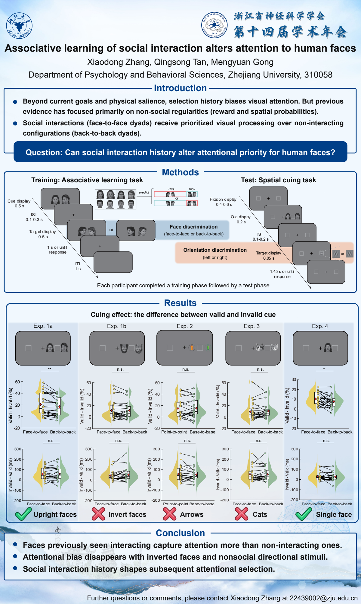

中国神经科学学会第十五届全国学术会议
杭州, 2021

全国心理学大会
线上, 2022

中国心理学会普通心理和实验心理专业委员会学术年会
金华, 2023

中国心理学会普通心理和实验心理专业委员会学术年会
兰州, 2024

中国心理学会普通心理和实验心理专业委员会学术年会
成都, 2025

European Conference on Visual Perception (ECVP 2026)
Bournemouth International Centre, Bournemouth, UK
August 23–27, 2026
Learned social interaction history prioritizes face perception and attentional selection
Qingsong Tan, Ke Jia, Mengyuan Gong
[pdf]

European Conference on Visual Perception (ECVP 2026)
Bournemouth International Centre, Bournemouth, UK
August 23–27, 2026
Neural representations of relational-based attentional template in frontoparietal network
Xianming Dai, Mengyuan Gong*
[pdf]

浙江省神经科学学会第十四届学术年会
温州，中国
2026年8月1–2日
A shared code for generalization but dissociable specificity in experience-driven attention
Shuheng Ouyang, Qingsong Tan, Mengyuan Gong*
[pdf]

浙江省神经科学学会第十四届学术年会
温州，中国
2026年8月1–2日
Associative learning of social interaction alters attention to human faces
Xiaodong Zhang, Qingsong Tan, Mengyuan Gong
[pdf]